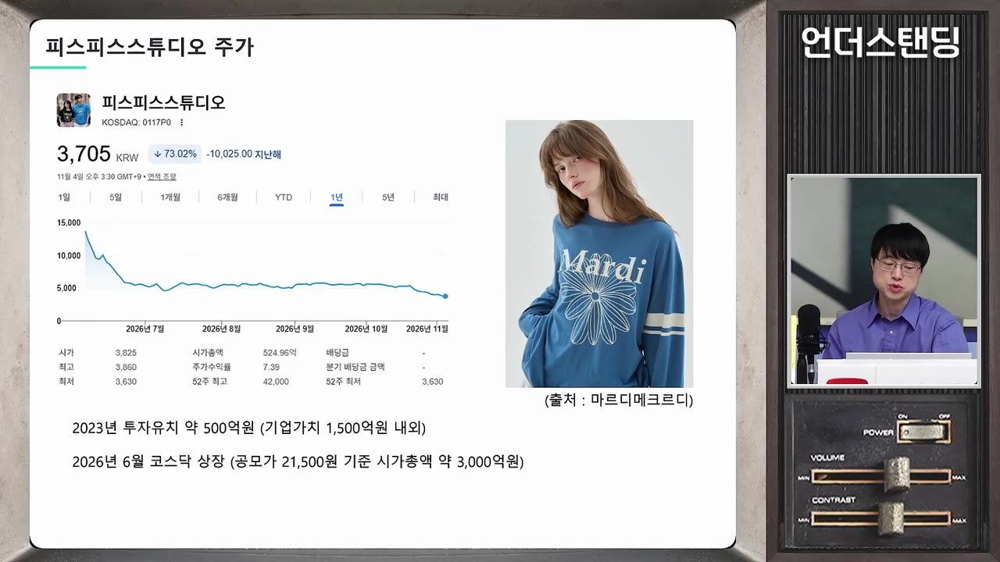
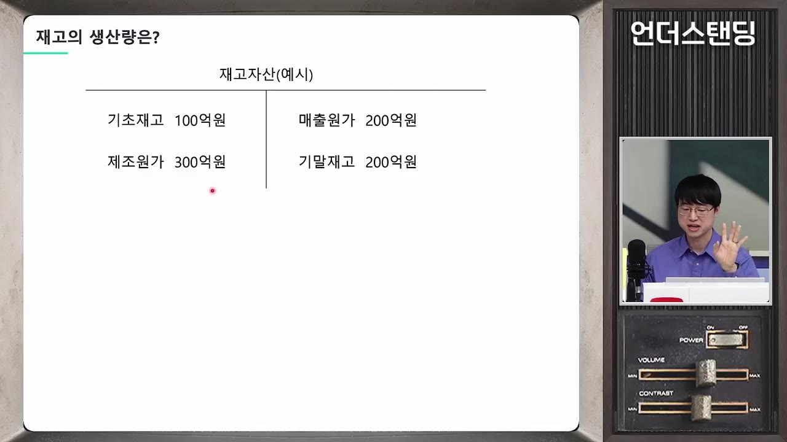

무너지는 회사의 재무제표에 숨어 있는 숫자는 이겁니다 (파인드어스 이재용 회계사)
▶ 원본 영상 보기한눈에 보기
- 마르디 메크르디(피스피스스튜디오)는 올해 6월 상장가 2만 1,500원에서 3,700원대로 떨어졌고, 시가총액은 약 3,000억 원대에서 500억 원 수준이 됐다고 영상은 말한다.
- 재고자산과 매출원가로 연간 생산액을 역산하면(기초재고 + 생산 − 매출원가 = 기말재고) 경영진이 미래를 어떻게 봤는지 드러난다: 2024년 생산을 크게 늘렸다가 2025년 대폭 줄였다.
- 2025년 재고 감소는 잘 팔려서가 아니라 감산 때문이며, 매출이 늘지 않았다는 점이 이를 뒷받침한다.
- 무신사를 떠나 직영 매장·쿠팡 입점으로 고정비와 판매비가 늘어 매출이 줄어도 판관비가 줄지 않아 영업이익이 급감했다.
- 브랜드 사업은 외부 투자(상장 시한 등 조건)가 오히려 독이 될 수 있고, 기업가치는 시장 규모·필요 자본·매출 지속성·경쟁 우위 네 가지로 가늠한다.
이런 분께 도움이 됩니다
- 재무제표로 기업의 숨은 속사정(특히 재고 중심 소비재·패션 기업)을 읽고 싶은 투자자.
- 공모주·브랜드 기업 투자 전에 점검할 항목이 필요한 분.
핵심 내용
사례: 마르디 메크르디의 급락
- 상장 4개월 반 만에 주가가 공모가 21,500원에서 3,705원으로 내려앉았다. (4:09)
- 2023년 벤처 투자 500억 원에 기업가치 약 1,500억 원, 올해 코스닥 상장 시 시총 약 3,000억 원대, 현재 약 500억 원.
- 매출 성장률은 2023년 83% → 2024년 57% → 2025년 둔화, 영업이익률도 24%대에서 크게 하락했다. (10:16)
- 매출원가율이 34%에서 40%대로 올라 할인·판매 부진 의심이 생긴다.
- 상장 당시 영업이익 167억 원의 약 20배 가치로 들어온 점을 영상은 "미스터리"로 본다. (12:39)
- 올해 상반기: 매출 600억 → 420억 원, 영업이익 134억 → 22억 원.
- 원가율은 유지돼 할인 폭탄 때문은 아니고, 팔 재고 자체가 적었던 것이 원인이라고 설명한다.
💡 겉보기 성장률이 아니라 "회사가 스스로 얼마나 만들었나"가 속마음이다.

재고로 읽는 경영진의 속마음
- 재고가 많은지 적은지는 매출원가와 비교해 "몇 개월치 재고인가"로 본다. 패션은 선주문 때문에 5~6개월치는 정상. (15:22)
- 2023년: 재고 100억 ÷ 월 원가 약 20억 = 약 5개월
- 2024년: 재고 268억, 원가 400억 → 약 7~8개월(늘어남)
- 2025년: 재고 135억, 원가 490억 → 약 3.3개월(급감)
- 재고 감소 원인은 두 가지: 잘 팔려서 vs 애초에 적게 만들어서. 매출이 늘지 않았으니 후자라는 해석. (17:42)
- 생산액 역산이 핵심: 4개 숫자 중 기초재고·기말재고·매출원가는 재무제표에 있고, 생산(제조)액만 없으므로 역산한다. (19:12)

🔁 연간 생산액 역산 방법
- 기초재고 확인
- 매출원가 확인
- 기말재고 확인
- 생산액 계산
- 1기초재고 확인
전년도 기말 재고자산
- 2매출원가 확인
손익계산서의 1년간 판매 원가
- 3기말재고 확인
올해 말 재무상태표 재고자산
- 4생산액 계산
기말재고 + 매출원가 − 기초재고
- 마르디 메크르디 역산 결과(영상 제시 수치): 2023년 약 328억 → 2024년 약 580억 → 2025년 대폭 감소(약 230억 감소).
- 2023년 생산은 전년 매출원가의 약 2.8배로, 투자 유치 시점의 성장 기세를 보여 준다. 일부 수치는 자막상 불분명.
- 2024년 생산분 상당량은 2026년에 팔아야 하는데 기말재고가 135억뿐 → 경영진이 2026년 매출 부진을 이미 알았다는 해석.
- 생산량은 경영진이 완벽히 통제하는 숫자라 "숨길 수 없는 마음"이다.
💡 재무제표는 숨기고 싶은 것을 "꼭 쓰시오"라고 친절히 알려 주지 않으니, 역산이 필요하다.
감산을 선택할 수밖에 없는 이유
- 패션은 "밀어내기"가 안 된다: 재고가 늘면 그만큼 현금이 정확히 빠지고 돌아오지 않는다. (27:52)
- 롱패딩 10만 장을 만들었는데 따뜻한 겨울이 오면 회사가 위험해진다는 예. 패션은 미래를 맞혀야 한다. (28:26)
- 해외 총판에 재고를 넘겼다가 안 팔리면 역수입(병행수입)으로 국내 가격 신뢰가 무너질 수 있다. (24:24)
유통 이탈과 고정비 폭탄
- 2023년 무신사·29cm에서 빠지고 직영 매장 확대, 상장 직전 2026년 4월 쿠팡 입점. (33:22)
- 수수료(약 30%)를 아끼려다 임차·감가상각·광고비 등 고정비가 늘었고, 매출이 줄어도 판관비는 260억 → 230억 정도로만 감소.
- 나이키도 아마존을 떠났다가 다시 입점한 사례를 들어, 유통은 최소 매출을 만들어 주는 힘이라고 본다. (34:26)
투자 유치가 독이 되는 경우
- 투자금이 들어오면 공개 채용·매장 확대로 조직이 희석되고, 매출 속도가 못 따라오면 현금이 빠르게 줄어든다. (7:42)
- 브랜드는 숙성 시간이 필요한데 투자 계약에는 보통 상장 시한·미달 시 이자 20~30% 같은 조건이 붙는다. (37:07)
- 노티드 도넛: 2022년 300억 원 투자 후 인건비 140억 → 250억, 임차료 37억 → 69억으로 늘며 매출 520억 → 790억에도 영업이익은 −69억, 이후 역성장. (39:09)
- 성공적으로 천천히 간 사례로 런던 베이글(연 1~2개 매장), 성심당(매장 수 대신 매장당 매출 증가)을 든다.
💡 줄이 길다는 건 사업이 아니라 놀이에 가깝고, 자본의 속도와 맞지 않는다.
투자가 맞는 회사
- 주문이 밀려오는데 돈만 없는 회사, 또는 시행착오를 짧게 겪고 완전체가 될 대표. (45:33)
- 예: APR(에이피알). 영상은 패션에서 돈을 잃고 해외 영업망 학습 후 성장했다고 설명.
- 투자자가 확실한 시너지를 줄 수 있는 회사: 무신사 투자 락피시 계열(AU 브랜지), 대명화학이 인수한 마땡킴. (49:56)
- 마땡킴은 2025년 재고를 늘리며 영업이익을 지킨 것이 마르디 메크르디와 대조된다.
| 구분 | 마르디 메크르디 | 마땡킴(대명화학 계열) |
|---|---|---|
| 2025년 재고 생산 | 크게 감소 | 크게 증가 |
| 유통 | 무신사 이탈, 직영·쿠팡 | 계열 유통망 활용 |
| 영업이익 | 급감 | 방어 |
기업가치를 가늠하는 네 가지 기준
- 영상은 멀티플(주가배수)을 높일지 낮출지 이 네 가지로 판단한다고 한다. (54:53)
- 시장: 글로벌 확장 가능성 vs 내수 한정(카카오 사례).
- 성장에 필요한 자본: 공장 등 투자가 많이 들면 약점(식품 사례).
- 매출 지속성: 원히트인가, 히트작을 반복 만들 시스템이 있는가(로레알, 삼양식품).
- 경쟁 우위: 카피가 어려운 브랜드·세계관·시스템이 있는가.
💡 약점이 무엇인지 알아야, 그 약점이 개선될 때 투자 기회를 알아본다.
기억할 숫자·인용
- 주가 21,500원 → 3,705원(약 4.5개월), 시총 3,000억대 → 500억.
- 매출 성장률 83% → 57% → 정체, 상반기 영업이익 134억 → 22억.
- 재고 개월 수: 5개월 → 7~8개월 → 3.3개월.
- 인용: "재무제표에서 볼 수 있는 건 회사의 속마음 같은 거죠."
생각해볼 점
- 영상은 출연자(이재용 회계사)의 해석이며, 감산 이유와 경영진 의도는 추정이다. 다른 요인(상품 구성 변화, 재고 처리 방식)도 가능하다.
- 투자 시점의 개별 수치는 자막 구술 기반이라 정확한 값은 공시(DART)로 확인이 필요하다.
- 투자 판단이 아니라 사례 해석이므로, 단정하지 말고 다른 회사에도 같은 방법을 적용해 보는 것이 좋다.
바로 해볼 일
- 관심 기업의 최근 3년 기초·기말 재고와 매출원가로 연간 생산액을 직접 역산해 본다.
- 재고 ÷ 월평균 매출원가로 "몇 개월치 재고인지" 계산한다.
- 투자 검토 기업에 시장·필요 자본·매출 지속성·경쟁 우위 네 가지를 점수 매겨 본다.